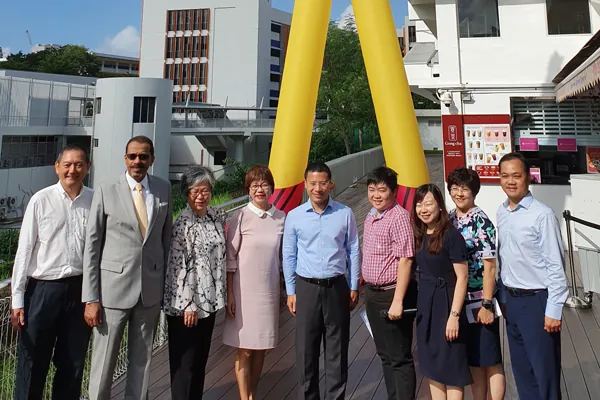
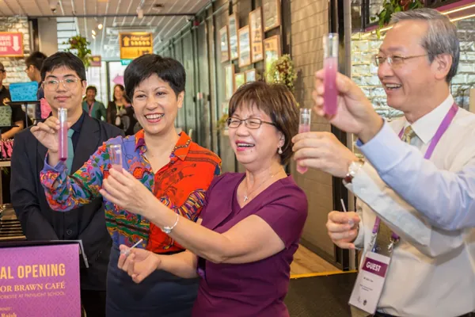
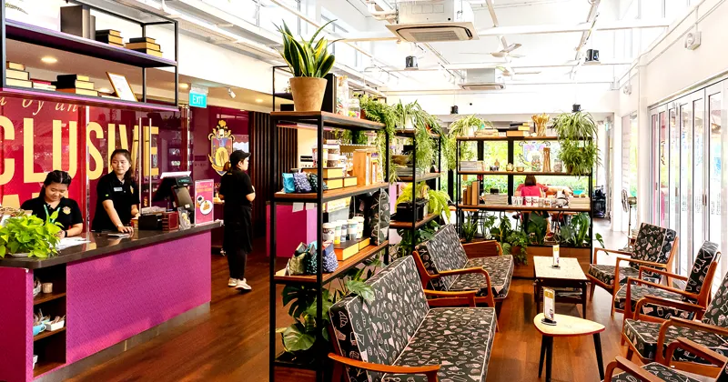
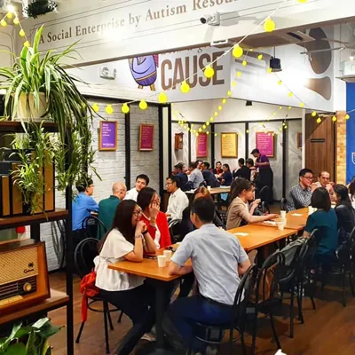
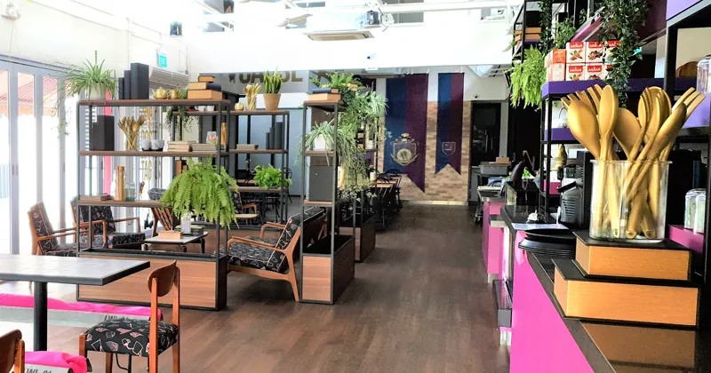

Our story
First, a child drew a superhero.
He wears a bow tie and a cape, and he is smart, kind and strong. Professor Brawn was created by a child on the autism spectrum — and he became the catalyst for a social enterprise built on quality, dignity and inclusiveness.

From one café to a movement
Seventeen years of showing what's possible
-
15 October 2009
Parents and friends open the first Professor Brawn
A group of parents and friends, passionate about creating real change for the special-needs community, open a café built on the belief that everyone deserves the chance to contribute and shine — a place to open doors to employment, showcase special talents, and build support for inclusion.
-
2018
The founders donate the brand to ARC(S)
After almost nine years of operation, the founders donate the Professor Brawn brand and know-how to Autism Resource Centre (Singapore), so the inclusive employment model can keep growing. That July, ARC(S) reopens Professor Brawn at Raffles Institution as a testbed for a scalable model of inclusive employment.
-
January 2020
The Enabling Village bistro — the largest yet
Professor Brawn Bistro opens at Enabling Village in Redhill as the largest public outlet, serving an inclusive dining experience and employing persons with a range of special needs. The RI and EV outlets have since closed as the worksite model continues to be refined — but they proved the idea at scale.

Official opening of the Professor Brawn Bistro at Enabling Village, January 2020. -
Today
Two cafés at Pathlight School — and counting
Professor Brawn Inclusive Café runs public cafés at Pathlight School Campus 1 (Ang Mo Kio) and Pathlight School (Tampines). Team members on the autism spectrum train and work with support from job coaches from ARC(S)'s Employability & Employment Centre (E2C), alongside colleagues and customers who value inclusion and respect.

Official opening of Professor Brawn Café at Pathlight School.
Inclusion in action
A real shift, not a photo op
Every service is staffed by an inclusive team of different abilities, ages and socio-economic backgrounds — real training, real wages, real careers. Your order is what funds it.


Beyond the kitchen
Art on the shelves, too
Alongside the café, ARC(S) runs The Art Faculty — merchandise carrying artwork by artists on the autism spectrum. Mugs, totes and gifts share the shelves with the Professor's coffee, so a meal can leave with a story printed on it.
Professor Brawn holds the Enabling Mark (Platinum), Singapore's national accreditation for organisations that hire inclusively and mean it.

In the papers
Press & coverage
A few of the stories written about the Professor over the years.
-
Feb 2022
TheSmartLocal
Organisations that support individuals with special needs and inspire an inclusive society.
-
Mar 2021
Lianhe Zaobao
"Happiness is met in doing good" — a feature on the café's inclusive team.
-
Apr 2020
The Straits Times
Stay-home guide: fish and chips for a good cause.
-
Jan 2020
The Straits Times
Largest Professor Brawn outlet opens in Enabling Village at Lengkok Bahru.
-
Dec 2019
Yahoo News
Opening minds and work opportunities for people with autism.
-
Oct 2019
Berita Harian
Kafe Professor Brawn equips autistic workers with people skills.
-
Jun 2019
The Pride
"This café with an inclusive workforce gives me hope for my son's future."

The story continues at lunch
The most useful thing you can do with all of this? Come hungry. Mon–Sat & public holidays, 9am–9pm, at Ang Mo Kio and Tampines.